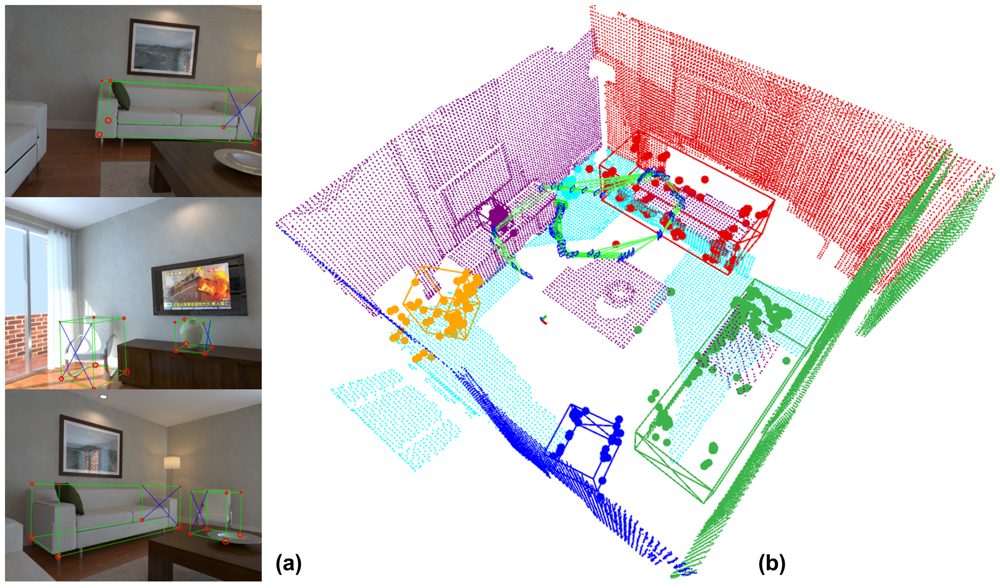

Benchun Zhou
PhD StudentRobotics and Interactive Systems (ROBiS)
Institute of Material Handling and Logistics (IFL)
Karlsruhe Instite of Technonoly (KIT)
Email: benchun.zhou@kit.edu; benchun.germany@gmail.com
Research topics: Robotics, Visual SLAM, Navigation
About
I am a PhD student in KIT, supervised by Prof. Dr.-Ing. Furmans Kai.
I am focusing on the visual simultaneous localization and mapping (SLAM) combined with object. I am also interested in related topcis including navigation, multi-sensor fusion etc.
For the research work during my PhD, please refer PhD.
For the project during my bachelor and Master, please refer MasterToPhD.
Current Research (contine ...)
|  |
Benchun Zhou, Maximilian Gilles, Yongqi Meng Adcanced Robotics, 2022 |
|
Constantin Enke, Jan-Felix Klein, Marvin Sperling, Benchun Zhou Logistics Journal, 2022 |

|
Benchun Zhou, Yongqi Meng, Furmans Kai IEEE/Intl. Conf. on Automation Science and Engineering, CASE, 2022 |
|
Benchun Zhou, Aibo Wang, Jan-Felix Klein, Furmans Kai IEEE/Intl. Conf. on Multisensor Fusion and Integration for Intelligent Systems, MFI, 2021 |